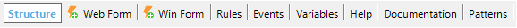

Describes an object or actor of reality, defining the structure of the database, business rules, and the UI for data manipulation.
Transactions are the first GeneXus objects you create in a Knowledge Base, as they allow you to describe objects or actors of reality. We recommend paying attention to the nouns used by the users when describing their reality and needs, to identify which Transactions you must create (I.e., Customer, Country, etc.).
Each Transaction has these selectors

| Structure |
The Transaction structure allows us to define the attributes or fields that describe the object of reality.
The structure may have one Level or several Levels (nested or parallel). The attributes that belong to the same level will be entered, updated and deleted together. It is necessary to define, among the attributes making up each level, an attribute or set of attributes, acting as a unique identifier (primary key). |
| Web Form |
GeneXus automatically creates a Web Form according to the defined structure. This form will allow users to add, change and delete data at runtime. |
| Win Form |
GeneXus automatically creates a Win Form according to the defined structure. This form will allow users to add, change and delete data at runtime in Win applications. |
| Rules |
This section is used to define specific behavior rules for the Transaction. For example, validations for the entered data, etc. |
| Events |
This section allows us to define events with idle code, which are activated in response to certain actions by the user or the system. |
| Variables |
This section allows us to define variables that will be local to the Transaction (temporary, in memory). |
| Help |
Here you can write help texts, which users will be able to refer to during Transaction runtime. |
| Documentation |
Here you can write technical text, in wiki format, to be used as documentation of the system. |
| Patterns |
Here you can apply Patterns to the Transaction. Patterns allow us to empower our applications by easily adding new features! When you apply a pattern, GeneXus creates all the necessary objects to provide the desired behavior without the need for us to program them.
Category. You can apply the Category Pattern to the Transaction. The term "Category" is self-explanatory as this pattern is used to 'categorize' items.
Work With for Web. You can apply the Work With Pattern to the Transaction. The Work With Pattern is one of the best-known and most useful patterns in business applications.
Work With for Smart Devices. You can apply the Work With for Smart Devices object to the Transaction. In user interfaces, we frequently find a view that shows a list of items and when one of them is selected, that item's detail is displayed. Sometimes this pattern is called Master-DetailTransaction. |
GeneXus analyzes the Transaction structures and generates the necessary programs to create the database (if it doesn't exist), which will be automatically normalized to third normal form, according to the main theories of relational databases. In other words, GeneXus extracts the knowledge from the Transaction structures to define the physical tables to be created or updated in the database. After that, GeneXus also generates programs (forms with several functionalities) to interact with the database previously created.
 First Transaction design First Transaction design
Defining more Transactions
Working with attributes and domains
|